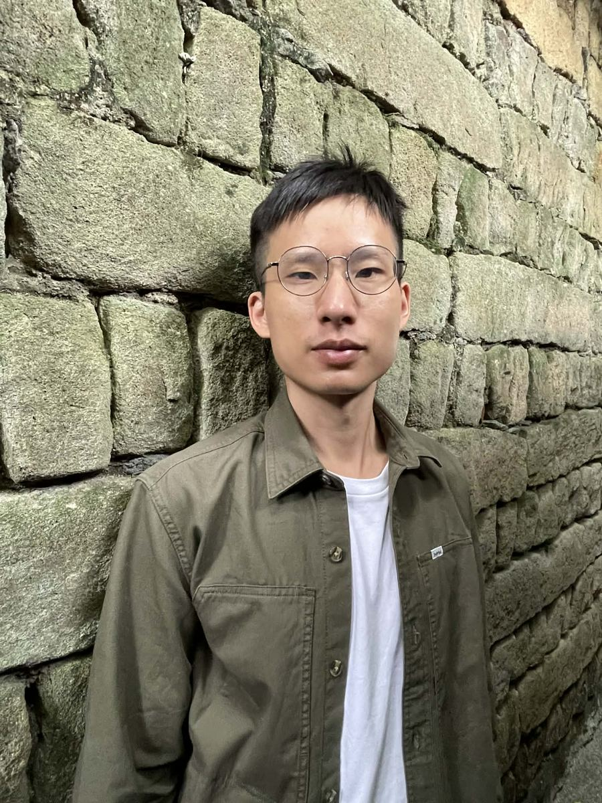

Inverse Skyscape
An AR Installation Inspired by James Turrell's Work "Skyscape"
View projectSelf Cutter
Builds Complex Form with Simple Boolean Operation
View projectUnreal Fisheye
A Tool for Fisheye Output from Unreal Engine
View projectMarket Soundscape
Making Virtual Experience With Real-World Soundscape
View projectInteractive Table
Small-Scale Projection Mapping System Prototype
View project
About關於我
I aspire to be an engineer with a strong grounding in the humanities. I have studied architecture and sociology, created contemporary poetry and dance works, and am currently practicing Tai Chi.
Professionally, I specialize in Unreal Engine and immersive systems. I have worked on multiple small-scale, mobile projection mapping projects, as well as walk-through VR experiences, motion capture, and motion platforms. I am currently working at the CLAB Dome Theater.
Professional Experience
- Seabunny Tech2020–2024
- Big x Reality2024–2026
- Taiwan Contemporary Culture Lab – Future Vision Lab2026–
立志做一個有人文素養的工程師，讀過建築和社會學，創作過現代詩和現代舞，目前正學習太極拳。
專業方面擅長虛幻引擎Unreal Engine和沉浸式系統，曾做過多個小尺度，移動式光雕投影展示專案。也做過走動式VR、動態捕捉及動感平台。目前正在CLAB穹頂劇場服務。
專業經歷
- 兔豚科技2020–2024
- 全球動力科技2024–2026
- 台灣當代文化實驗場－未來視覺實驗室2026–